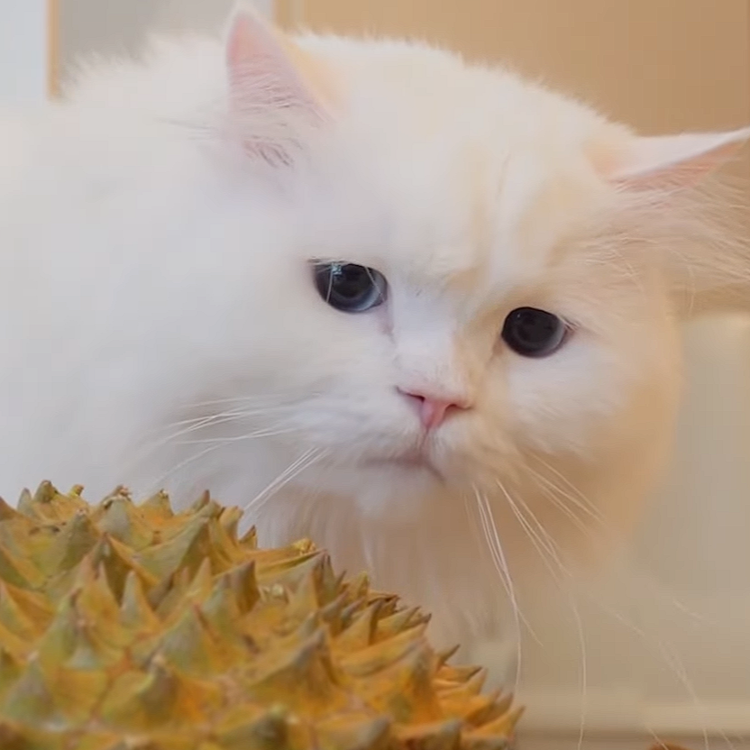

Oliver Mayburn

Summary
I'm a creative Computer Science undergraduate based in Chester, obsessed with the intersection of code and canvas. With a background in freelance digital illustration, I specialize in UI/UX and front-end development—building software that looks as good as it functions. I am eager to apply my artistic eye and technical logic to a dynamic development or design team.
This is all fake for preview/exercise purpose only.
Education
- University of Chester | Chester, UK
- BSc (Hons) Computer Science (September 2024 – Present)
- Focus areas: Human-Computer Interaction, Web Development, Computer Graphics.
- Cheshire College – South & West | Chester, UK
- A-Levels: Computer Science (B), Art & Design (A), Graphic Communication (B) (September 2022 – June 2024)
Work Experience
- Freelance Digital Illustrator Self-Employed / Remote | Jan 2023 – Present
- Create custom digital character art and assets for clients via social media commissions.
- Design logos and stream overlays for Twitch streamers and local content creators.
- Manage client timelines and deliver high-resolution files using Adobe Photoshop and Procreate.
- Barista & Social Media Assistant The Jaunty Goat, Chester | May 2023 – Present
- Prepare specialty coffee in a high-volume independent café.
- Assist the management team with photographing menu items for Instagram stories.
- Maintain a welcoming, creative atmosphere for customers.
Skills
- Technical: HTML/CSS, JavaScript, Python, React.
- Creative: Adobe Creative Suite (Photoshop, Illustrator, XD), Figma, Procreate.
- Soft Skills: Visual problem solving, attention to detail, creative collaboration.
Awards and Certifications
- Best Visual Design Award – Uni of Chester Game Jam (2024)
- Gold Arts Award (Trinity College London)
- Google UX Design Professional Certificate (In Progress)
Contact Me